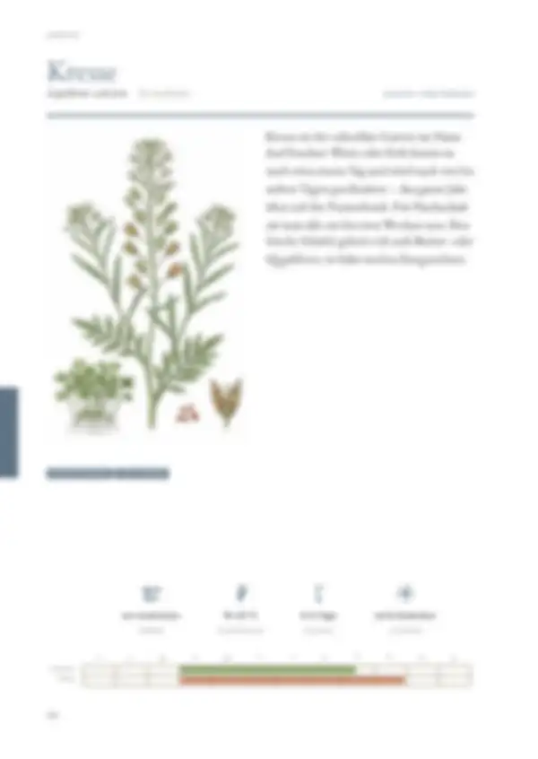
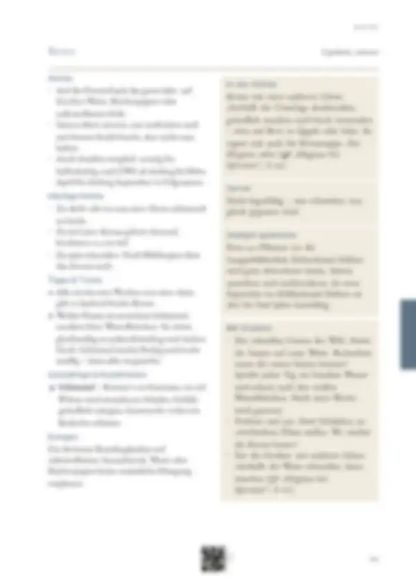

Tippe eine Quelle an, um zu sehen, wo sie verwendet wird – oder tippe auf einen Bereich der Seite.
14 Quellen dieser Doppelseite
Original · abgerufen am 26.10.2026 · ◐ ErfahrungVerwendet in: Zusammenfassung (Seite allgemein), Monatsleiste, Anbau, In der Küche, Vorrat, Häufige Fehler, Saatgut gewinnen, Tipps & Tricks, Mit Kindern, Schädlinge & Krankheiten, Düngen
Original · abgerufen am 26.10.2026 · ◐ ErfahrungVerwendet in: Zusammenfassung (Seite allgemein), Piktogramm-Leiste, Monatsleiste, In der Küche, Vorrat, Häufige Fehler, Saatgut gewinnen, Tipps & Tricks, Mit Kindern, Schädlinge & Krankheiten, Düngen
Original · abgerufen am 26.10.2026Verwendet in: Zusammenfassung (Seite allgemein), In der Küche, Vorrat, Häufige Fehler, Saatgut gewinnen, Mit Kindern
Original · abgerufen am 26.10.2026 · ◐ ErfahrungVerwendet in: Zusammenfassung (Seite allgemein), Piktogramm-Leiste, In der Küche, Vorrat, Häufige Fehler, Saatgut gewinnen, Tipps & Tricks, Mit Kindern
Original · abgerufen am 26.10.2026 · ○ ÜberlieferungVerwendet in: Zusammenfassung (Seite allgemein), Monatsleiste, In der Küche, Vorrat, Häufige Fehler, Saatgut gewinnen, Mit Kindern, Schädlinge & Krankheiten
Original · abgerufen am 26.10.2026 · ◐ ErfahrungVerwendet in: Zusammenfassung (Seite allgemein), Piktogramm-Leiste, Monatsleiste, In der Küche, Vorrat, Häufige Fehler, Saatgut gewinnen, Tipps & Tricks, Mit Kindern
Original · abgerufen am 26.10.2026 · ◐ ErfahrungVerwendet in: Zusammenfassung (Seite allgemein), In der Küche, Vorrat, Häufige Fehler, Saatgut gewinnen, Tipps & Tricks, Mit Kindern, Schädlinge & Krankheiten
Original · abgerufen am 28.10.2026 · ● belegtVerwendet in: Zusammenfassung (Seite allgemein), In der Küche, Vorrat, Häufige Fehler, Saatgut gewinnen, Mit Kindern
Original · abgerufen am 27.10.2026 · ◐ ErfahrungVerwendet in: Zusammenfassung (Seite allgemein), Anbau, In der Küche, Vorrat, Häufige Fehler, Saatgut gewinnen, Mit Kindern
Original · abgerufen am 27.10.2026 · ● belegtVerwendet in: Zusammenfassung (Seite allgemein), Anbau, In der Küche, Vorrat, Häufige Fehler, Saatgut gewinnen, Mit Kindern
Original · abgerufen am 27.10.2026 · ● belegtVerwendet in: Zusammenfassung (Seite allgemein), In der Küche, Vorrat, Häufige Fehler, Saatgut gewinnen, Mit Kindern
Original · abgerufen am 27.10.2026 · ● belegtVerwendet in: Zusammenfassung (Seite allgemein), In der Küche, Vorrat, Häufige Fehler, Saatgut gewinnen, Mit Kindern
Original · abgerufen am 26.10.2026 · ◐ ErfahrungVerwendet in: Zusammenfassung (Seite allgemein), Monatsleiste, Anbau, In der Küche, Vorrat, Häufige Fehler, Saatgut gewinnen, Mit Kindern
Original · abgerufen am 28.10.2026 · ◐ ErfahrungVerwendet in: Piktogramm-Leiste
● belegt (Versuch, Fachinstitut) · ◐ Erfahrung (Beratung, Praxis) · ○ Überlieferung. Abschnitte ohne eigene Quellenangabe in den Daten zeigen die Quellen der ganzen Seite („Seite allgemein“).